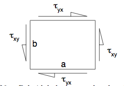
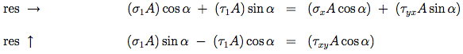
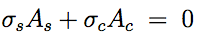

Interactive Online Tutorial Sheets
Tutorial Sheet Seven Stress-Strain Two
Q1: A rubber block ($100 mm \times 100 mm \times 40 mm$) is attached to two steel plates as shown in figure Q1. The rubber has a Young’s modulus of $E = 10 MPa$ and a Poisson’s ratio of $v = 0.5$. Estimate the shear modulus of the rubber. The lower plate is held fixed (in a horizontal plane) and a horizontal force of 4 kN is applied to the upper plate. How far does this plate move?
| Hints | |
|---|---|
| $ G = \frac{E}{2(1+v)} $ | |
| $ \gamma = \frac{\tau}{G} = \frac{F}{GA} $ | |
| $ d = h\tan\gamma \simeq h\gamma $ |
Q2: The bridge pillar shown (schematically) in figure Q2 supports a vertical load of $ 3MN $. Determine the total volume of concrete in the pillar if its density is $ \rho = 2400 kg m^{−3} $, and the allowable compressive stress is limited to $ 1 MPa $. What would be the volume of a column of constant cross-section designed under the same conditions?
| Hints | |
|---|---|
| Upper Block: $ stress = \frac{P + \rho ghA_1}{A_1} = M $ | |
| Lower Block: $ stress = \frac{P + \rho ghA_1 + \rho gh A_2}{A_2} = M $ | |
| $ stress = \frac{P + \rho g(2h)A}{A} = M $ |
Q3:
(i) Part (a) of figure Q3 shows an element in equilibrium within a block. If the rest of the block exerts a shear stress τyx on the element as shown, show that it must also exert a shear stress of the same magnitude on the left and right vertical sides.
(ii) Part (b) of figure Q3 shows a cuboid of a rubber material subject to direct forces of 360 N acting on two side faces and a shear force of 180 N acting across the top face. The base of the block is held fixed. By considering the forces and stresses acting on elements of the form shown in parts (c) and (d) of the figure, determine the stresses associated with the diagonal planes EBCH and AFGD. (The length of the base of each element is twice its height so that its sloping face is parallel to the appropriate diagonal plane.) In each case find the direct stress acting in the material in a direction perpendicular to the plane, and the shear stress acting parallel to the plane.

| Hints | |
|---|---|
 |
|
|  |
Q4:The state of stress of an element of material is such that: a stress $\sigma_x$ is exerted in one direction, lateral contraction is free to occur in a second (y) direction, but is completely prevented in a third (z) direction. If the Young’s modulus and Poisson’s ratio for the material are $E$ = 200 GPa and $v = 0.3$ respectively, calculate the values of the applied stresses ($\sigma_x$ and $\sigma_y$ ) such that strain is $ \epsilon_x = 0.001 $. What then is the value of the strain $\epsilon_y$ in the y-direction?
| Hints | |
|---|---|
Q5:A cuboid of material is subject to a hydrostatic stress (that is, it is underwater and subject to the pressure of the water). The volumetric strain εvol is defined as the change in volume divided by the original volume. Show that:
| Hints | |
|---|---|
Q6: The component illustrated in figure Q6 consists of a steel rod of cross-sectional area $600mm^2$ coaxially surrounded by a copper tube of cross-sectional area $1200mm^2$. It is not subjected to any external load and there is no internal stress at $20^{\circ}C$. If its temperature is changed from $20^{\circ}C$ to $100^{\circ}C$, determine the axial stresses set up in the copper and the steel.
For Steel: $E = 205 GPa, \alpha = 11 \times 10^{−6} K^{−1}$
For Copper: $E = 115 GPa, \alpha = 16 \times 10^{−6} K^{−1}$
| Hints | |
|---|---|
 |
|
Q7:Two circular tubes both of length $2000mm$ are fixed together (one inside the other) at their ends as shown in figure Q7. This is when each tube has temperature $T$ and the tubes are unstressed. A temperature difference is then created by raising the temperature of one end to $(T + 100)^{\circ}C$. Find the stress in the copper tube.
| Hints | |
|---|---|